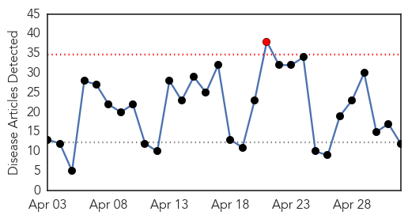
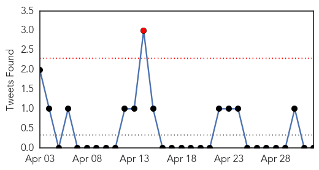
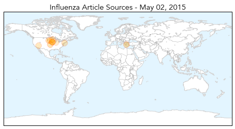
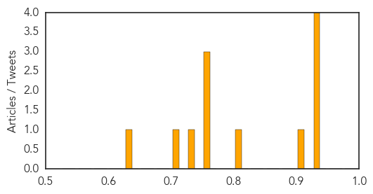

Cholera
30-Day Web Trend
0 alerts, 0 warnings

30-Day Twitter Trend
0 alerts, 0 warnings

Article Locations

Article Confidences

Top Articles:
- 0.977
- Monsoons could bring disease, a second crisis, to Nepal - UNICEF - TRFN
- 0.967
- Monsoons could bring disease, a second crisis, to earthquake-hit Nepal
- 0.913
- Crush syndrome: Saving lives in Nepal
- 0.728
- Unicef launches RM180 million appeal for Nepali quake victims
- 0.661
- Massachusetts General team heads to Nepal to aid relief effort
- 0.624
- 'Nepal Is Not Alone,' Aid Chiefs Say
- 0.512
- Nepal earthquake one week on: UNICEF warns of disease risk for children -- KATHMANDU, NEPAL, May 2, 2015
Top Tweets:
-
No tweets found for May 02, 2015
Influenza
30-Day Web Trend
1 alerts, 0 warnings

30-Day Twitter Trend
1 alerts, 0 warnings

Article Locations
Article Confidences
Top Articles:
- 0.946
- U.S. bird-flu outbreak elevates rapidly affecting 16 million; Governor declares “state of emergency” for Iowa
- 0.935
- Bird flu virus raises questions scientists working to answer
- 0.931
- Flu outlook 2013-2014: ‘Don’t hesitate, vaccinate!’
- 0.930
- Iowa becomes 3rd state to declare emergency over avian flu outbreak — RT USA
- 0.916
- State, federal response needed as bird flu wreaks havoc on ag economy
- 0.806
- More Bird Flu Outbreaks in Minnesota, State of Emergency in Iowa
- 0.751
- May 2, 2015 Archives
- 0.751
- May 1, 2015 Archives
- 0.751
- May 1, 2015 Archives
- 0.733
- Iowa governor declares state of emergency due to bird flu outbreak
- 0.725
- Iowa declared state of emergency as bird flu spreads
- 0.628
- Dog flu outbreaks temporarily close shelters, suspend adoptions
Top Tweets:
-
No tweets found for May 02, 2015